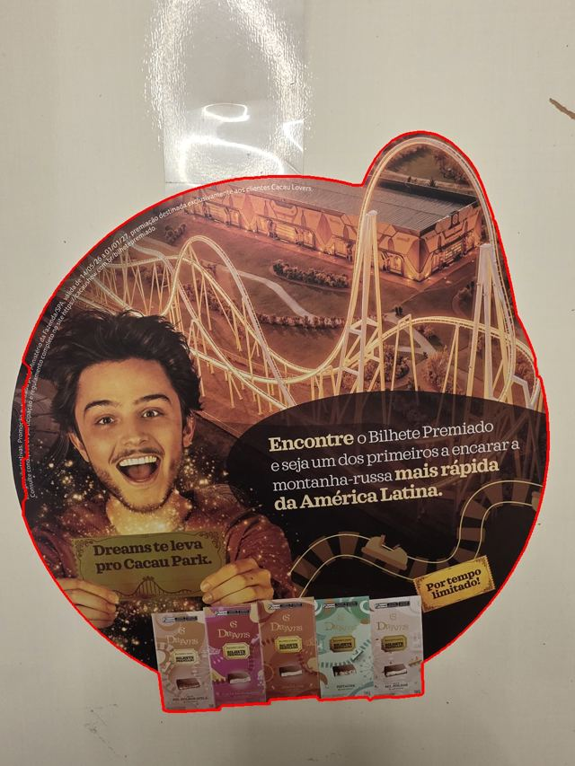

Gabarito do wobbler Ø29
Contorno do original com o loop da montanha-russa no canto superior direito e as barras de chocolate na base, em tamanho real (parte redonda = Ø290 mm). A linha sólida é o original; a tracejada fica 2 mm fora, onde o adesivo é cortado para dobrar na espessura do papelão.

Contorno extraído da foto (linha vermelha).
— no total, com a parte redonda em Ø290 mm.
- Gráfica (recomendado): imprimir gabarito-29cm-A3.pdf em papel comum. O desenho ocupa 292 mm de largura e a folha A3 tem 297 mm, sobram 2,5 mm de cada lado. Se a impressora não imprimir até a borda, peça escala 100% em papel A3+ ou rolo.
- Em casa: imprimir gabarito-29cm-A4.pdf (4 folhas), em 100% e sem "ajustar à página". Alinhe as cruzes e as linhas tracejadas de sobreposição de 14 mm, cole com fita e recorte.
- Confira a régua de 10 cm antes de recortar. Encaixe no original: deve cobrir exatamente, inclusive o retângulo das barras.